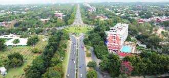
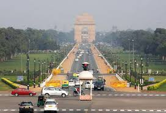
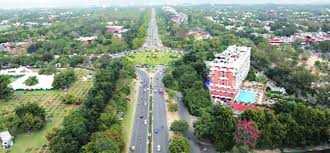
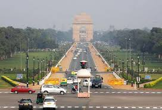
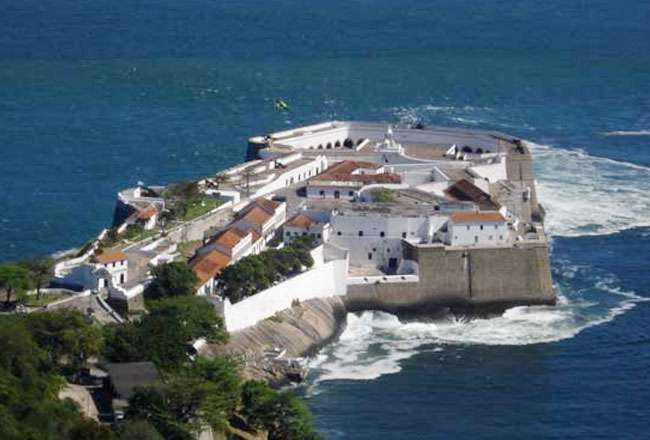
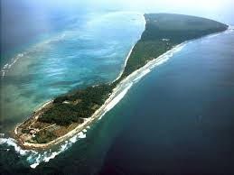

1
Andaman and Nicobar Islands
Port Blair
1 November 1956
2
Chandigarh

Chandigarh
1 November 1966
3
National Capital Territory of Delhi
New Delhi
1 February 1992
4
Dadra and Nagar Haveli

| Sr.No. | Union Territory | Capital | Establishment |
|---|---|---|---|
1 |
Andaman and Nicobar Islands |
Port Blair |
1 November 1956 |
2 |
Chandigarh |
Chandigarh |
1 November 1966 |
3 |
National Capital Territory of Delhi |
New Delhi |
1 February 1992 |
4 |
Dadra and Nagar Haveli |
Silvassa |
11 August 1961 |
5 |
Daman and Diu |
Daman |
30 May 1987 |
6 |
Lakshadweep |
Kavaratti |
1 November 1956 |
7 |
Puducherry |
Pondicherry |
1 November 1954 |